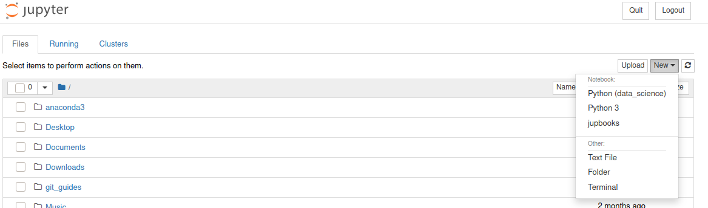

Introduction to Python Programming¶
In this second workshop we’ll take our first look at programming in Python. We’ll cover the key data types, as well as functions, and control flow statements.
%%HTML
<div style="text-align: center">
<iframe width="560" height="315" src="https://youtube.com/embed/HjF98JryayQ" frameborder="0" allowfullscreen></iframe>
</div>
Slides¶
You can view and download the slides in a variety of formats by clicking on the image below.
Data Types and Variable Assignment¶
This is a Jupyter Notebook. It allows use to write text in Markdown format (as we have in this block), and also run Python code and see the output. If you have completed the previous workshop, you should be able to launch a Jupyter Notebook on your own machine. Make sure you have a conda environment activated (type conda activate in your terminal if you don’t). Set up a new Notecook by typing jupyter notebook in a terminal window. This should launch Jupyter Notebooks running in your browser.
conda activate
jupyter notebook
Start a new Python script in your Python (data_science) environment.

Some of the most common data types in Python are integer (int) and floating point (float) for representing numbers, and strings (str) for representing text. We can assign values to variables - the data type is dynamically inferred by Python (in contrast to other languages such as C++ where they have to be explicitly declared). You can check what type a variable is by using type().
Try running the following two lines of Python code in your Jupyter Notebook.
my_name = "Andrew"
print(type(my_name))
<class 'str'>
In the output, you should see that the variable my_name has been identified as type str as it is contains text.
Assigning values to variables is a key component in scripting/coding. You can use variables to store values that you need to be able to access later, and variables can be re-assigned as your script progresses (maybe you want to store temporary values in a variable). You can print the content of a variable using the print(variable_name) function in Python. In the code below, we create two variables. The print function can take multiple arguments so we can print the values of the two variables with the line print(first_variable_name, second_variable_name).
my_favourite_number_text = "My favourite number is:"
my_favourite_number = 25
print(my_favourite_number_text, my_favourite_number)
My favourite number is: 25
How might you modify the above code so that it displays the following:
25 is my favourite number.
Click the button to reveal answer
my_favourite_number = 25
my_favourite_number_text = "is my favourite number."
print(my_favourite_number, my_favourite_number_text)
You might have come up with a slightly different solution. It’s important to remember there are often several (sometimes many) ways to achieve the same task - even in quite simple cases.
Let’s now assign a different number to the my_favourite_number variable and change the my_favourite_number_text back to what it was originally.
my_favourite_number = 16
my_favourite_number_text = "My favourite number is:"
print(my_favourite_number_text, my_favourite_number)
My favourite number is: 16
Lists¶
Lists can be assigned to variables. In Python lists are indicated by square brackets, [ and ], and contain elements - often of the same type - for example, lists of integers, strings etc. Lists can also contain a mix of elements of different types (but you may want to avoid this). The next bit of code creates a list called my_numbers that contains 4 integer elements. Remember, in contrast to R, Python uses zero-position indexing. So the first element in the list is at position 0, the second at position 1 etc. We can index an element in the list using square brackets. Let’s index the second element…
my_numbers = [10, 20, 30, 40]
my_numbers[1]
20
The next list is a list of strings. How would you go about indexing the fourth element?
my_names = ["Andrew", "Suzanne", "Eliza", "Seb"]
Click the button to reveal answer
my_names[3]
Elements in lists can be changed (i.e., lists are mutable):
my_names[0] = "Iggy Pop"
print(my_names)
['Iggy Pop', 'Suzanne', 'Eliza', 'Seb']
List can be sliced using : The following will slice from the third element to the end of the list.
my_names[2:]
['Eliza', 'Seb']
While the line below will slice from the start of the list up to (but excluding) the third element.
my_names[:2]
['Iggy Pop', 'Suzanne']
We can also specify the start and stop points of the slicing as follows.
my_names[1:3]
Tuples¶
Tuples are like lists, except they are immutable - in other words, their contents cannot be changed later. While lists are created using square brackets, tuples are created using round brackets. But like lists, you use square brackets to reference elements in a tuple.
my_tuple = (10, 20, 30, 40)
my_tuple[3]
40
If you try to change an element in a tuple, an error will be generated.
my_tuple[3] = 5
---------------------------------------------------------------------------
TypeError Traceback (most recent call last)
<ipython-input-11-ff0b7a9231b8> in <module>
----> 1 my_tuple[3] = 5
TypeError: 'tuple' object does not support item assignment
Tuples can be sliced too. The following will slice from the start up to (but excluding) the fourth element.
my_tuple[:3]
(20, 30)
How would you slice my_tuple so that it contains only the second and third elements?
Click the button to reveal answer
my_tuple[1:3]
If you wanted to, you could map the above output onto a new variable called my_slided_tuple and use the logical operator == (more on this later) to check that they are the same.
my_sliced_tuple = my_tuple[:3]
my_sliced_tuple == my_tuple[:3]
True
Arrays¶
An array is a data structure consisting of a collection of elements, each identified by at least one array index (or key). Arrays are core data structures in data science and machine learning. For example, you can store images as 2-dimensional arrays representing pixel brightness across the area of the image.
Data frames and tibbles in R are types of 2-dimensional arrays - data stored in rectangular format with rows and columns. Arrays don’t have to just be in two dimensions but it can be tricky imagining more dimensions…
NumPy Arrays are better than inbuilt Python Arrays in that they are more efficient as the arrays grow larger in size. We’ll spend more time on NumPy arrays in the next workshop but let’s just take a brief look.
In the code below we’re importing the numpy package as np (this is the conventional alias for this package). We then set our randomisation seed to ensure reproduciblity. Remember, computers can’t generate true random numbers so do it algorithmically. We can fix the start of this generation procedure to ensure that if we re-run our code we get the same random numbers. We then create an array of random integers from 0 (inclusively) and 10 (exclusively) that has 3 rows and 4 columns. We use the Numpy routine random and the operation randint to generate this array. We need to specify the low and high values of the range we’re sampling from, and the shape of the array (number of rows by number of columns) we are wanting to generate.
import numpy as np
np.random.seed(1234)
my_array = np.random.randint(low = 0, high = 10, size = (3, 4))
my_array
array([[3, 6, 5, 4],
[8, 9, 1, 7],
[9, 6, 8, 0]])
We can then check the shape of the array using .shape
my_array.shape
(3, 4)